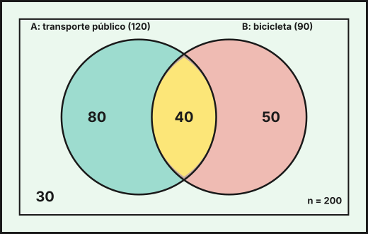
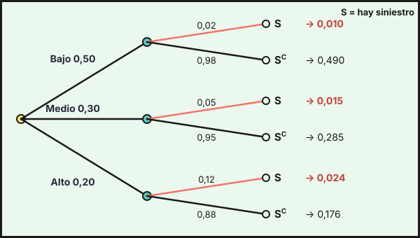

Probabilidad
1. Sucesos y operaciones
Un experimento aleatorio es aquel cuyo resultado no se puede predecir con certeza aunque se repita en las mismas condiciones (elegir a una persona al azar, lanzar una moneda). El conjunto de todos los resultados posibles es el espacio muestral \(E\), y un suceso es un subconjunto de \(E\). El suceso \(E\) es el suceso seguro y \(\emptyset\) el suceso imposible.
Notación y operaciones entre sucesos \(A\) y \(B\):
| Operación | Notación | Se verifica cuando… |
|---|---|---|
| Unión | \(A\cup B\) | ocurre \(A\) o \(B\) (o ambos) |
| Intersección | \(A\cap B\) | ocurren \(A\) y \(B\) a la vez |
| Complementario | \(A^C\) | no ocurre \(A\) |
| Diferencia | \(A-B=A\cap B^C\) | ocurre \(A\) y no ocurre \(B\) |
| Incompatibles | \(A\cap B=\emptyset\) | no pueden ocurrir a la vez |
Se cumplen las leyes de De Morgan: \((A\cup B)^C=A^C\cap B^C\) y \((A\cap B)^C=A^C\cup B^C\).
2. Axiomas de Kolmogorov y propiedades
La probabilidad \(P\) asigna a cada suceso un número cumpliendo los axiomas de Kolmogorov:
- \(P(A)\ge0\) para todo suceso \(A\).
- \(P(E)=1\).
- Si \(A\) y \(B\) son incompatibles (\(A\cap B=\emptyset\)), entonces \(P(A\cup B)=P(A)+P(B)\).
De ellos se deducen las propiedades:
- \(P(\emptyset)=0\) y \(0\le P(A)\le1\).
- \(P(A^C)=1-P(A)\).
- \(P(A\cup B)=P(A)+P(B)-P(A\cap B)\).
- \(P(A-B)=P(A)-P(A\cap B)\).
- Si \(A\subset B\), entonces \(P(A)\le P(B)\).
Regla de Laplace: si los \(N\) resultados son equiprobables, \(P(A)=\dfrac{\text{casos favorables}}{\text{casos posibles}}\).
Ejemplo. En una encuesta a \(n=200\) personas, 120 usan el transporte público (\(A\)), 90 la bicicleta (\(B\)) y 40 usan ambos. Se elige una persona al azar:
- \(P(A)=\frac{120}{200}=0{,}6\), \(P(B)=0{,}45\) y \(P(A\cap B)=\frac{40}{200}=0{,}2\).
- \(P(A\cup B)=0{,}6+0{,}45-0{,}2=0{,}85\).
- Ninguno de los dos medios: \(P(A^C\cap B^C)=P\bigl((A\cup B)^C\bigr)=1-0{,}85=0{,}15\) (son 30 personas).
- Solo transporte público: \(P(A-B)=0{,}6-0{,}2=0{,}4\); solo bicicleta: \(P(B-A)=0{,}45-0{,}2=0{,}25\).

3. Experimentos compuestos y diagramas de árbol
Un experimento compuesto consta de varios experimentos simples sucesivos. Se representa con un diagrama de árbol: cada rama lleva su probabilidad y la probabilidad de un camino completo es el producto de las probabilidades de sus ramas. Las probabilidades de las ramas que salen de un mismo nodo suman 1.
Si las pruebas son independientes (por ejemplo, extracciones con reemplazamiento), las probabilidades de las ramas no cambian de una etapa a otra. Si no hay reemplazamiento, las probabilidades de la segunda etapa dependen de la primera.
Ejemplo. Un centro tiene 12 docentes, 7 mujeres y 5 hombres, y se eligen al azar dos para una comisión.
- Sin reemplazamiento (no se puede elegir dos veces a la misma persona): \(P(\text{dos mujeres})=\dfrac{7}{12}\cdot\dfrac{6}{11}=\dfrac{7}{22}\approx0{,}318\) y \(P(\text{una de cada})=\dfrac{7}{12}\cdot\dfrac{5}{11}+\dfrac{5}{12}\cdot\dfrac{7}{11}=\dfrac{35}{66}\approx0{,}530\).
- Con reemplazamiento (las extracciones son independientes): \(P(\text{dos mujeres})=\left(\dfrac{7}{12}\right)^2=\dfrac{49}{144}\approx0{,}340\).
En poblaciones finitas, se entiende que las muestras se toman con reemplazamiento salvo que el enunciado diga lo contrario.
4. Probabilidad condicionada e independencia
La probabilidad de \(A\) condicionada a \(B\) es la probabilidad de que ocurra \(A\) sabiendo que ha ocurrido \(B\) (con \(P(B)>0\)):
\[P(A\mid B)=\frac{P(A\cap B)}{P(B)}\qquad\Longrightarrow\qquad P(A\cap B)=P(B)\cdot P(A\mid B)\]
Dos sucesos son independientes si saber que ocurre uno no cambia la probabilidad del otro:
\[A\text{ y }B\text{ independientes}\iff P(A\cap B)=P(A)\cdot P(B)\iff P(A\mid B)=P(A)\]
(Si \(A\) y \(B\) son independientes, también lo son \(A\) y \(B^C\), \(A^C\) y \(B\), y \(A^C\) y \(B^C\).)
En la encuesta del apartado 2, \(P(A\mid B)=\frac{40}{90}=\frac49\approx0{,}444\neq P(A)=0{,}6\) y \(P(A\cap B)=0{,}2\neq P(A)P(B)=0{,}27\): usar la bicicleta y el transporte público no son independientes (quien usa la bici usa menos el transporte público).
Tablas de contingencia. Recogen frecuencias de dos características a la vez; las probabilidades se obtienen dividiendo entre el total. Ejemplo: contratos de las 200 personas de una empresa.
| Indefinido (\(I\)) | Temporal (\(T\)) | Total | |
|---|---|---|---|
| Hombre (\(H\)) | 70 | 40 | 110 |
| Mujer (\(M\)) | 45 | 45 | 90 |
| Total | 115 | 85 | 200 |
- \(P(I)=\frac{115}{200}=0{,}575\), \(P(M)=0{,}45\) y \(P(I\cap M)=\frac{45}{200}=0{,}225\).
- \(P(I\mid M)=\frac{45}{90}=0{,}5\) y \(P(I\mid H)=\frac{70}{110}\approx0{,}636\): las mujeres tienen con menos frecuencia contrato indefinido.
- \(P(M\mid T)=\frac{45}{85}=\frac{9}{17}\approx0{,}529\): entre las personas con contrato temporal, algo más de la mitad son mujeres.
- No son independientes: \(P(I\mid M)=0{,}5\neq P(I)=0{,}575\) (o también \(P(I\cap M)=0{,}225\neq P(I)P(M)=0{,}25875\)).
Ejemplo (independencia). Un edificio tiene dos sistemas de alarma independientes que funcionan con probabilidad \(0{,}9\) y \(0{,}8\). Entonces \(P(\text{ambos})=0{,}9\cdot0{,}8=0{,}72\); \(P(\text{al menos uno})=1-P(\text{ninguno})=1-0{,}1\cdot0{,}2=0{,}98\); y \(P(\text{exactamente uno})=0{,}9\cdot0{,}2+0{,}1\cdot0{,}8=0{,}26\).
5. Teoremas de la probabilidad total y de Bayes
Sea \(A_1,A_2,\dots,A_n\) un sistema completo de sucesos: incompatibles dos a dos y con \(A_1\cup\dots\cup A_n=E\). Para cualquier suceso \(B\):
\[\textbf{Probabilidad total:}\quad P(B)=\sum_{i=1}^{n}P(A_i)\cdot P(B\mid A_i)\]
\[\textbf{Teorema de Bayes:}\quad P(A_j\mid B)=\frac{P(A_j)\cdot P(B\mid A_j)}{P(B)}=\frac{P(A_j)\cdot P(B\mid A_j)}{\sum_i P(A_i)\cdot P(B\mid A_i)}\]
Interpretación. Las \(P(A_i)\) son las probabilidades a priori (antes de observar nada). Al observar que ha ocurrido \(B\), Bayes las actualiza a las probabilidades a posteriori \(P(A_i\mid B)\). Es la herramienta para decidir en condiciones de incertidumbre: dado lo que se ha observado, ¿qué causa es la más probable?
Ejemplo (aseguradora). Una aseguradora clasifica a sus clientes en riesgo bajo (\(50\,\%\)), medio (\(30\,\%\)) y alto (\(20\,\%\)). La probabilidad de tener un siniestro en el año es \(0{,}02\), \(0{,}05\) y \(0{,}12\), respectivamente. Sea \(S\) «el cliente tiene un siniestro».

Probabilidad total. \(P(S)=0{,}5\cdot0{,}02+0{,}3\cdot0{,}05+0{,}2\cdot0{,}12=0{,}010+0{,}015+0{,}024=0{,}049\): el \(4{,}9\,\%\) de los clientes tiene un siniestro.
Bayes. Si sabemos que un cliente ha tenido un siniestro, ¿de qué tipo es?
\[P(\text{alto}\mid S)=\frac{0{,}2\cdot0{,}12}{0{,}049}=\frac{0{,}024}{0{,}049}=\frac{24}{49}\approx0{,}490,\quad P(\text{medio}\mid S)=\frac{15}{49}\approx0{,}306,\quad P(\text{bajo}\mid S)=\frac{10}{49}\approx0{,}204\]
Los clientes de riesgo alto eran el \(20\,\%\) de la cartera, pero entre quienes tienen un siniestro suben al \(49\,\%\). Con esta información la aseguradora actualiza su valoración del riesgo.
Ejemplo (detector de fraude). El \(2\,\%\) de las operaciones de un banco son fraudulentas. Un detector da alerta en el \(95\,\%\) de las fraudulentas y, por error, en el \(4\,\%\) de las legítimas. Sea \(F\) «fraude» y \(L\) «alerta».
\[P(L)=0{,}02\cdot0{,}95+0{,}98\cdot0{,}04=0{,}019+0{,}0392=0{,}0582,\qquad P(F\mid L)=\frac{0{,}019}{0{,}0582}=\frac{95}{291}\approx0{,}326\]
Aunque el detector acierta el \(95\,\%\) de las veces con fraudes, solo una de cada tres alertas es un fraude real, porque los fraudes son raros. Decisión: lo razonable es revisar manualmente las alertas, no bloquear automáticamente. En cambio, si no hay alerta, \(P(F\mid L^C)=\frac{0{,}02\cdot0{,}05}{1-0{,}0582}\approx0{,}001\): es muy improbable que haya fraude.
- \(A^C\) complementario; \(A-B=A\cap B^C\); De Morgan: \((A\cup B)^C=A^C\cap B^C\).
- Kolmogorov: \(P\ge0\), \(P(E)=1\), aditividad para incompatibles. \(P(A\cup B)=P(A)+P(B)-P(A\cap B)\); \(P(A^C)=1-P(A)\).
- Árbol: se multiplica por las ramas del camino y se suman los caminos favorables.
- \(P(A\mid B)=P(A\cap B)/P(B)\); independientes \(\iff P(A\cap B)=P(A)P(B)\).
- Total: \(P(B)=\sum P(A_i)P(B\mid A_i)\). Bayes: \(P(A_j\mid B)=P(A_j)P(B\mid A_j)/P(B)\) (de a priori a a posteriori).